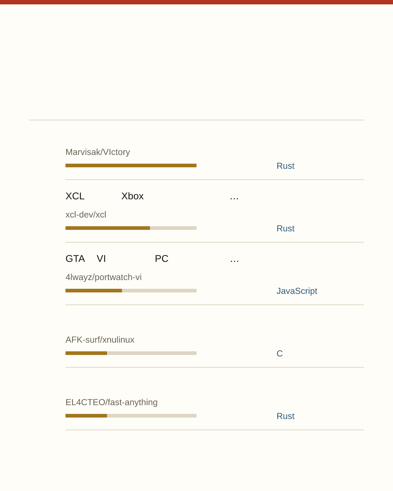

前沿 AI · 本周 5 个工具

这个项目叫 VIctory，作者对它的描述只有一句话：尝试在 PC 上运行 GTA VI。它不是盗版游戏，也不是模拟器合集，而是一层自己写的平台代码。按 README 的说法，游戏本身的 x86-64 代码原封不动地跑在项目自己的进程里，项目负责补上主机那一层平台，并把游戏数据提前转换好。x86-64 指的是游戏程序编译出来的指令格式，PC 和 Xbox 系列主机用的是同一类，所以这部分代码可以不改直接跑。
先说清楚现在能到什么程度。作者在二零二六年十一月二十五日写下的状态是：还不能玩，卡在帧率上，世界里大约每秒一帧。除此之外没有别的拦路问题。游戏能启动，首次启动的无障碍、语言、设置、法律条款这些界面正常，菜单按游戏自己的三十帧跑；开场视频有声音；开始界面、存档都能用；加载进世界大约要一分钟；开场动画能播，人物有贴图和光照，头发完整，建筑、天空、景深、标题卡、字幕和界面都在。序章也走到了，画面完整显示。
缺的东西也写得很具体。开场动画里没有光线追踪的阴影和间接光，也没有局部光源的阴影遮罩。有些镜头里，近处人物身上会出现一条粉色色带，某个次要角色有几帧用的是替身头部。作者还提到一个细节：在每秒一帧的开场动画里，片头字幕出现的位置和主机上不一样，因为字幕跟着帧数走，镜头跟着时钟走。
硬件方面，只在一台机器上测过：Windows 十一，AMD RX 6700 XT，十二 GB 显存。作者还留了一条警告：早期版本在真实显卡上进入世界会把显卡挂住，Windows 随后重置显示驱动，所有显示器会黑一下。最近几次跑了几分钟没有复现，但不能排除；一次运行也可能以显卡故障结束，记录在 crashes.log 里。另外有一个诊断版本，设置环境变量 VICTORY_D3D12_WARP=1 后改用软件渲染，但太慢，几分钟内到不了世界。
项目按子系统列了现状。加载器负责把游戏的可执行文件和动态库跑在自己的进程里，崩溃报告会指出出错的代码，存在 crashes.log。运行时服务支持一个已登录的离线用户、许可证、包、任意步骤被杀掉也能存活的存档，以及文本输入对话框；语音是静音的，对话框和重启流程没有实机验证。网络按设计是离线的，游戏连不上网。文件和流式加载能读归档和流式数据，zlib 和 BCPack 并行解码，瓶颈在往游戏内存里写。输入支持 XInput 手柄、键盘，以及用键盘模拟手柄，扳机震动还没做。音频方面菜单、视频和加载音正常，XMA 语音和 Opus 流能解码，混响是静音的，Opus 的结果没有和游戏本体核对过。
图形是重头。菜单的绘制、计算和呈现走宿主机的 D3D12，只复制游戏改过的内存。世界这边已经能把场景画出来并呈现：网格管线、间接执行、着色器自己从堆里挑视图、按地址读游戏内存、从计算写深度、等待其他队列写值的列表、着色器第一次读纹理时才创建纹理、管线预建或由工作线程创建并留在磁盘上。还缺的是：游戏的光线追踪结构从未构建，所以开场动画没有光追阴影和间接光；大约一秒一帧；没有翻译的着色器绘制会被丢弃；真实查询、HDR 和缩放都没有。
着色器是另一个关键点。主机的 GPU 代码被重新编译成 DXIL，也就是 PC 上 D3D12 能用的着色器格式，可以提前用 translate --cache 做，也可以第一次用到时做，结果缓存在磁盘上。菜单的全部着色器都翻译完了；世界里两万四千三百八十七个程序里，还差不到三百个。
对普通人来说，这个项目现在更像一份进度报告，而不是能装来玩的软件。你需要自己有 Xbox Series X|S 版的游戏文件，有一台 Windows 机器，还要能接受命令行操作和随时崩溃。README 摘录里没有给出完整的安装命令，所以这里也不编。适合的人大概是愿意折腾、想看主机代码怎么在 PC 上被接起来的开发者或爱好者；只想玩游戏的人，现在用不上。
XCL 想解决的问题很具体：你买过的 Xbox Series X|S 游戏，能不能在 Windows 电脑上直接跑。它的做法不是模拟一台主机，而是把游戏运行所需要的那层「翻译」补上。项目描述里写得很清楚，它重写了主机系统库，还把主机的显卡代码重新编译成 PC 能用的格式。
先说它不做什么。它不做 CPU 模拟。模拟的意思是让电脑假装自己是一台主机，一条一条翻译主机指令，速度通常会打折。XCL 走的是另一条路：游戏的 x64 代码在电脑上原生运行，也就是电脑本来就能直接执行的那套指令，中间少了一层翻译。
那它补的是什么？主机上有一些 Windows 没有的系统库，比如 kernelx.dll、XGameRuntime、d3d12_xs.dll 这些名字。你可以把它们理解成游戏开机时要找的几本说明书，PC 上没有这几本书，游戏就起不来。XCL 自己独立写了这几本书的替代品，游戏来找的时候能对上。
显卡这边是另一个难点。主机的 GPU 代码是 RDNA2 机器码，PC 显卡不认识这种格式。XCL 把它重新编译成 HLSL，再转成 DXIL，也就是 Direct3D 12 能吃的着色器格式。打个比方，相当于把主机方言的菜谱翻译成 PC 厨房看得懂的做法，菜还是那道菜。
README 里给了一张游戏状态表，这是判断它现在能干什么的重要依据。Minecraft Preview 标注为完全可玩，Unicorn Overlord 也是完全可玩。Fortnite 标注为可用，但游戏本身是在线游戏，离开它的在线服务能走多远就走多远。XDefiant 同样标注为可用，不过它自己的服务器已经关了。还有一款较新的零售游戏，标注约完成六成，是估算值：大约四秒出第一帧，菜单稳定三十帧，进到三维世界大约五帧，着色器百分之百能翻译。这个数字说明它离「什么都能玩」还有距离。
使用边界必须讲清楚。XCL 只处理你已经拥有、并且已经解包的游戏文件。它不下载、不解密、不解包 XVC 或 MSIXVC 这类游戏包，也不包含任何绕过 DRM 的东西。仓库里没有主机 SDK 的代码、头文件或二进制，没有密钥，也没有游戏数据。它依赖的 Windows 组件，比如 XGameRuntime、XAudio2、D3D12、DXC，来自你自己的系统或公开的 Windows SDK，不随 XCL 分发。
谁用得上？手里有已解包的 Xbox 游戏文件、又想在 Windows 上试试能不能跑起来的人，比如一个已经买了 Minecraft Preview 并解包到本地的玩家，可能装好就能进游戏。谁用不上？只想点一下下载、不想碰文件解包和命令行的人，以及期待它像普通游戏平台一样一键安装的人，大概率会觉得门槛太高。
上手路径要看清楚。README 摘录里没有给出具体的安装命令，所以这里不编。能确认的是：它面向 Windows 10 或 11 的 x64 系统，需要 Direct3D 12 和 Shader Model 6.6，用 Rust stable-msvc 构建。普通人的实际步骤大概是：先确认系统是 Windows 10 或 11 的六十四位版本，准备好自己已解包的游戏文件，然后按仓库里的构建说明用 Rust 工具链编译，或者看仓库有没有提供现成的构建产物。具体命令以仓库文档为准，别照搬记忆里的写法。
为什么现在值得看？输入里能看到的依据是：8608 颗星，主题标签包括 d3d12、gdk、rdna2、xbox，README 里已经有四款游戏标注可玩或可用，还有一款约六成的在推进。这些说明它已经过了「只有概念」的阶段，但离通用还有不确定性。
许可证方面，README 徽章写的是 GPL-2.0-only，可以照抄。最后提醒一句：这类项目进展快，状态表会变，动手前先看仓库最新说明，别把本文当成永久结论。
GTA VI 到底能不能在 PC 上跑？这个问题在社区里已经吵了很久。有人在做重新编译，有人在搞模拟器，还有人只是把泄露出来的 Xbox Series 版本搬来搬去。信息散落在 GitHub、论坛和聊天软件里，普通人根本追不过来。这个叫 PortWatch VI 的仓库，做的就是把这些努力收拢到一个页面上。
它本身不是一个游戏工具，也不是破解包。它是一个静态网站，用 JavaScript 写成，托管在 GitHub Pages 上。所谓静态网站，就是一堆提前生成好的网页文件，不需要后台服务器一直跑着。你打开页面看到的内容，是脚本提前算好、写进文件里的。
页面最上面有一条总进度条，显示当前最接近成功的那个项目走到了哪一步。下面挂着几个置顶项目。再往下是一个倒计时，指向那个「缺失的可执行文件」预计出现的时间。每个被追踪的项目都有一张排行榜卡片，卡片上有它自己的进度条、里程碑阶梯、基础工作拆解，还有「什么已经能跑」和「什么卡住了」。
除了主榜，页面还有几个分区。一个是观察名单，放早期项目；一个是工具包，收罗素材处理工具；一个是「侦察兵收件箱」，列出新发现的候选项目；最后是假下载警告，提醒你别点那些来路不明的安装包。README 里写得很清楚：这个仓库不托管、也不链接任何游戏文件、密钥或可执行程序。
数据是怎么来的？靠一个叫 scout 的脚本，也就是「侦察兵」。它每三小时在 GitHub 的服务器上跑一次，时间点是 UTC 的 00:17、03:17、06:17 这样往后排。你不需要开着自己的电脑。它做的事情大概有这么几件。
第一，刷新每个被追踪仓库的数据，包括星数、复刻数、议题数、最后一次推送时间、最近七天的提交数，以及这个仓库是不是已经消失了。消失的判断包括 404，或者因为 DMCA 被屏蔽的 451。它还会给每个 README 算一个哈希值，用来发现内容有没有变。
第二，抓「声明」。如果某个项目的 README 新写了「GTA VI 能启动」「能进菜单」「能跑到多少帧」，卡片上就会出现一个「未经证实的声明」横幅，变更记录里也会记一笔。这个设计挺关键，因为社区里最容易出现的就是口头进度。
第三，发现新项目。它会从 GitHub 和 GitLab 的搜索里找，也会从 Hacker News、Bluesky、Mastodon、Lemmy 和 4chan 上扒帖子里的 GitHub 链接。如果配置了 Reddit 和 X 的密钥，也会从这两个地方找。它还会从谷歌新闻和必应新闻的订阅源里收集头条，只保留跟泄露、移植、下架、骗局或官方消息有关的。另外它会盯着 GitHub 的公开 DMCA 日志，看有没有 Take-Two 或 Rockstar 的新通知，一旦点名了某个被追踪的项目就标出来。
第四，过滤垃圾。克隆网络、下载诱饵、所谓「PC 安装器」这类仓库会被筛掉。它们的名字只会出现在「这里没有下载」那个计数里，永远不会被链接。
第五，过滤复制品。如果一个仓库复用了被追踪项目的名字，或者 README 有六成以上雷同，就会被标记为重新上传，改了名也算。原创的粉丝游戏和没有正经 README 的仓库也会跳过。已经在排队等待的候选项目，每次运行都会重新检查。
第六，给「实质内容」打分。看代码语言、体积、技术深度、状态表、测试和提交活跃度。有真实代码的仓库会进入「新候选」，以纯文本展示，审核之前不给链接。内容单薄或者跑题的，记下来然后跳过。
部署方式在 README 里写了四步。第一步，新建一个 GitHub 仓库，把这个文件夹推到 main 分支。第二步，在仓库里打开 Settings，进 Pages，把 Source 设成 GitHub Actions。第三步，打开 Settings 里的 Actions，再进 General，确认工作流是允许运行的。第四步，打开 Actions，找到 Scout，点 Run workflow，跑第一次侦察。它会提交新数据并部署网站。
每次部署还会跑一个构建脚本，把数据文件变成搜索引擎能读的页面：每条新闻一个页面，一个新闻归档，一个 RSS 订阅源，还有一个站点地图。然后它会用 IndexNow 通知 Bing、Yandex 等搜索引擎，不需要账号。谷歌那边要自己去 Search Console 添加站点，再提交站点地图。
之后 Scout 就每三小时自动跑一次。想改频率，编辑工作流文件里的 cron 那一行就行。比如改成每天一次，就是 `17 6 * * *`。GitHub 在忙的时候，定时任务可能会晚几分钟。
谁用得上这个？如果你只是想知道「现在到底能不能玩」，打开页面看一眼总进度条就够了，不用装任何东西。如果你在跟进某个具体项目，排行榜卡片能告诉你它卡在哪。但如果你想要的是下载链接或者安装教程，这个仓库帮不上忙，它明确不提供这些。
为什么现在值得看？输入里给了 Star 数五千七百五十，说明关注的人不少。README 里提到的自动侦察、每三小时刷新、假下载警告这些设计，也说明它想解决的是信息分散和骗局泛滥的问题。至于它能不能一直维护下去，有不确定性。
xnulinux 这个项目做的事，一句话说就是：让 macOS 的内核住进 Linux 里。
先解释两个词。内核是操作系统的地基，管 CPU、内存、硬盘、网卡这些硬件，上面的应用都靠它。XNU 是 macOS 用的那个内核，苹果把它的源码公开了。可加载内核模块，是指一段能临时插进正在运行的系统内核里的代码，插进去就能用，不用重装系统。xnulinux 就是把 XNU 编译成一个叫 xnu.ko 的模块，插进 Linux 内核。
关键点在于，它不是虚拟机。虚拟机是在你的系统里再模拟一台电脑，多一层翻译，速度有损耗。xnulinux 的做法是让 XNU 直接管 CPU 和内存管理单元，macOS 的进程和 Linux 的进程跑在同一批 CPU 上，中间没有虚拟机那一层。README 里的架构图写得很清楚：上面一排是 macOS 的进程，比如 launchd、WindowServer、Safari；下面一排是 Linux 的进程，比如 systemd、sshd；中间是 xnu.ko 和 fki.ko 两个模块，再往下是普通的 Linux 内核。
那 Linux 的东西怎么给 macOS 用？靠 fki.ko，README 叫它外部内核接口。Linux 通过它把内存、定时器、文件、网络和显卡借给 XNU。具体来说，CPU 方面，每个给 macOS 用的 CPU 其实是 Linux 的一个内核线程，绑在一个物理 CPU 上；内存方面，XNU 从 Linux 拿到一整块连续内存，用自己的方式管理；设备方面，kexts 目录里的小驱动给 macOS 提供磁盘、显示器、键盘鼠标、网卡和显卡桥接。
显卡这块值得多说一句。README 说 macOS 里的 Metal 跑在 gpu/xnu-cpu-metal 上，走 Vulkan 到 Linux 这边的显卡；如果没有可用的显卡桥接后端，就退回用 CPU 渲染。所以就算显卡这条路没打通，系统也能跑起来，只是画面靠 CPU 算。
README 演示了什么？在普通 Ubuntu 内核上，用 insmod xnu.ko 这条命令加载模块，就能启动一个由苹果自己的安装器做出的 macOS 系统盘，一直进到桌面，看到登录窗口、窗口服务、程序坞、访达、Safari 和 Chrome。截图里还展示了同一个屏幕左边是 macOS 终端，右边是从 macOS 里 SSH 连回它所在的 Linux。另外还有在英伟达 DGX Spark 裸机上跑的记录，用 4 个 CPU 和 8 GiB 内存，CPU 渲染。
需要说清楚的是适用范围。 README 明确写的是 arm64 Linux，也就是 ARM 架构的 64 位机器，比如苹果芯片的 Mac、一些 ARM 服务器和开发板。普通人的 x86 笔记本，从现有材料看用不上。另外它需要你没改过的发行版内核，README 提到的是普通 Ubuntu 内核、4K 页。
上手门槛不低。 这不是装个软件点下一步的事。你得有一台 arm64 的 Linux 机器，得能编译内核模块，还得有一个苹果安装器做出来的 macOS 系统盘。README 摘录里给出的关键动作就是加载 xnu.ko 这个模块，但完整的编译和准备步骤，摘录里没有展开，所以这里也不替它编。
谁适合看？一类是喜欢折腾系统底层的开发者，想研究两个内核怎么共存在一台机器上；另一类是想在 Linux 环境里跑 macOS 程序、又不想吃虚拟机损耗的人。谁不适合？只想在普通电脑上装个 macOS 玩玩的人，这台车暂时不是给你准备的。
为什么现在值得关注？输入里能看到的依据是：这个项目有 4235 个 Star，说明已经有不少人在看；README 展示了能进桌面、能开 Safari、能在裸机上跑，完成度不是纸上谈兵。但 Star 涨得快不快、社区热度怎么走，输入没有给，这里不做判断。许可证方面，README 摘录里提到 xnu.ko 属于 APSL 一侧、fki.ko 属于 GPL 一侧，但没有明确写出整个仓库的许可证，所以这一项留空。
很多人一遇到程序慢，第一反应是「整个项目用 Rust 重写一遍」。这个想法听起来很爽，真做起来往往是几个月起步，编译一次要等好几分钟，磁盘上还会堆出一大坨编译产物。可实际情况是，程序里真正拖时间的，通常就那么几个函数。fast-anything 抓住的就是这一点：不重写整个项目，只重写慢的那一小部分。
它的工作方式可以想成一次体检加一次小手术。第一步是体检，用 scan 命令把你的应用跑起来，看时间都花在哪些函数上，然后按「耗时」和「好不好搬走」两个维度排序。第二步是小手术，port 命令会录下最多 500 次真实调用，同时生成一个只装一个函数的 Rust 小工程，外加一份任务说明文件 TASK.md。你把这份说明交给编程助手，由它来完成翻译。
这里说的 Rust，是一门编译型语言，跑起来通常比解释型语言快，但写起来更费劲。所以它没有让你手写，而是把翻译这件事交给 claude、codex 这类编程助手，或者任何能从标准输入读提示词的程序。没有助手也行，把 TASK.md 自己拿去用就可以。
翻译完最关键的一步是验证。verify 命令会用发布模式编译这个 Rust 小工程，然后把之前录下的每一次调用重新放一遍，对比原函数和新函数的输出。README 里举了一个很典型的例子：有个改写看起来完全正确，但它比较的是字节而不是字符，结果 500 次真实调用里有 148 次对不上，被当场抓了出来。除了录下的调用，它还会自己造一些边界情况让原函数先给出答案，比如 NaN、正负无穷、负零、非 ASCII 文本、空输入，以及放大到十六倍的输入，还有一些被缩小和随机切片的输入。只要有一个用例对不上，就不会启用。
确认一致之后，enable 把 Rust 版本换进去，disable 再换回来。README 说这个开关是一段带标记的代码块，删除时可以一个字节一个字节地还原，所以整件事是可逆的。想量化效果就用 bench，它会把原始版本、原始版本再来一遍、Rust 版本轮着跑，其中「原始版本再来一遍」是用来当对照的，帮助判断波动是不是噪声，同时给出实际耗时和 CPU 时间。最后 report 能生成一份 markdown 加 SVG 卡片的报告，方便贴进 PR。
上手路径不算复杂，但有一个前提：本机要有 Rust 工具链，README 指向 rustup 去装。装好之后，用 npm 全局安装，或者用 cargo 安装，二选一。然后一条命令就能跑完整流程，比如指定用 claude 作为助手，后面接上你自己的启动命令。想一步一步来也行，scan、port、verify、enable 分开执行，中间可以停下来看看每一步的结果。另外还有 doctor 命令，用来检查 Rust、各种运行时和助手是否就位。
谁用得上？手上有一个能跑起来、但某几个操作明显偏慢的 Python、Node 或 Ruby 服务，又不想大动干戈的开发者，比较适合。谁用不上？项目本身还没跑通、或者瓶颈根本不在计算上的，比如卡在数据库查询或网络请求，这套流程大概率帮不上忙。
为什么现在值得看？输入里能看到的依据是：仓库有 4226 个 Star，主题标签覆盖了 claude-code、codex、mcp 这类编程助手生态，README 也把「让助手来翻译」写进了主流程。这可能说明它踩中了「用 AI 助手做局部重构」这个方向。至于它是否适合你的项目，还得看实际验证结果，这一点有不确定性。许可证方面，README 标注的是 MIT。